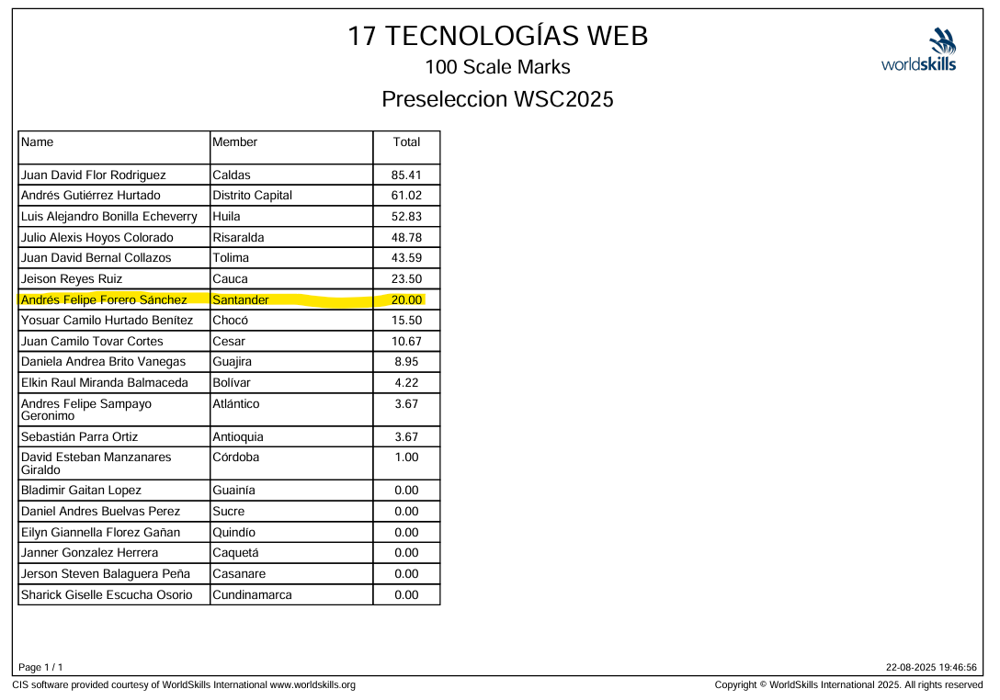

Sobre mí
Soy aprendiz de Análisis y Desarrollo de Software en el SENA, con enfoque en desarrollo web. Me interesa crear interfaces claras, funcionales y bien estructuradas, cuidando tanto el diseño como la lógica detrás del código.
Lenguajes
- 🐍 Python
- 🦴 HTML
- 🎨 CSS
- 🤖 JavaScript
- 🐘 PHP (Básico)
- 📊 MySQL
- 🐱 Git
Dato Humano
Me gustan los retos y las competencias técnicas, donde puedo medir mis habilidades y buscar siempre el mejor resultado.
Proyectos
🌐 Sistema de Autenticación Web
Desarrollo de un sistema de autenticación con PHP y MySQL que permite el registro e inicio de sesión de usuarios. Se implementaron formularios, validación de datos y conexión a base de datos, enfocado en el correcto funcionamiento del backend.
-
Tecnologías:
- 🐘 PHP
- 📊 SQL (Php admin)
- 🦴 HTML
- 🎨 CSS

🤖 Proyecto de Robótica Educativa con LEGO
Proyecto de robótica educativa enfocado en la solución de retos técnicos mediante lógica y trabajo colaborativo por GAES (grupo autonomo de estudio sena), fortaleciendo habilidades de análisis y resolución de problemas.
-
Tecnologías:
- 🧱 LEGO
- 🧠 Lógica de programación
- 📚 Trabajo en equipo

💻 Participación en Competencias Técnicas Nacionales
Participación en exposiciones técnicas a nivel regional y nacional, incluyendo eventos en Bucaramanga y Pereira, presentando proyectos tecnológicos en equipo.
-
Habilidades
- 📚 Trabajo en equipo
- 📣 Comunicación
- 🗂️ Organización
Estudios
🎓 Análisis y Desarrollo de Software
SENA – Servicio Nacional de Aprendizaje
En formaciónSoy aprendiz del programa Análisis y Desarrollo de Software, donde he adquirido bases sólidas en programación, desarrollo web y lógica computacional. Durante la formación he trabajado con tecnologías frontend y backend, así como en el análisis de problemas y la construcción de soluciones funcionales orientadas a proyectos reales.
-
Áreas trabajadas:
- 🌐 Desarrollo web (HTML, CSS, JavaScript)
- 📊 Backend básico con PHP y MySQL
- 🧠 Lógica de programación y algoritmia
- 📚 Trabajo colaborativo y metodologías básicas
- 📄 Documentación y presentación de proyectos
🤖 Robótica Educativa
Proyectos académicosParticipé en proyectos de robótica educativa con LEGO, enfocados en la resolución de retos técnicos mediante lógica, creatividad y trabajo en equipo. Estas experiencias fortalecieron mis habilidades de análisis, comunicación y pensamiento estructurado.
🏆 Formación orientada a competencias
WorldSkills / procesos competitivosHe hecho parte de procesos formativos enfocados en competencias técnicas, lo que me permitió desarrollar disciplina, organización, manejo del tiempo y atención al detalle. Además, participé en espacios de exposición y trabajo colaborativo a nivel regional y nacional.
Logros
🎬 Certificado en Medios Audiovisuales
SMARTFILMS® – Ministerio de Comercio, Industria y Turismo (2025)Participación y aprobación del taller de creación audiovisual, enfocado en la producción de contenidos con dispositivos móviles, narrativa audiovisual (storytelling) y estrategias de promoción turística.
Duración: 4 horas
-
Fortalecimiento:
- 👀 Comunicación visual y narrativa
- 🧠 Presentación clara de ideas
- 🎭 Creatividad aplicada a proyectos
- 🎥 Uso del audiovisual como herramienta profesional

🐍 Certificado en Python
SENA (2025)Certificación en fundamentos de programación con Python, aplicando lógica computacional, estructuras básicas y resolución de problemas mediante código.
-
Fortalecimiento:
- 🕵️♂️ Resolución de problemas
- 🧠 Pensamiento lógico
- 👩💻 Bases sólidas en programación
- 🤖 Enfoque estructurado para el desarrollo de software
🏆 Certificado de Participación – WorldSkills
SENA / Proceso de Competencias Técnicas (2025)Participación en procesos formativos y evaluativos orientados a competencias WorldSkills, bajo criterios técnicos y de calidad en desarrollo de software.
-
Fortalecimiento:
- 🧙 Disciplina y constancia
- 🛡️ Trabajo bajo presión
- 🚫 Cumplimiento de estándares
- 🏆 Mentalidad competitiva y de mejora continua

🔬 Certificado – Encuentro Zonal de Semilleros de Investigación
SENA – Regional Risaralda (2025) Línea TIC e Inteligencia Artificial – SENASOFTParticipación en el Encuentro Zonal de Semilleros de Investigación SENA, realizado en Pereira, presentando la propuesta:
“Sistema de gestión con IA para la recolección de reciclaje en el SENA CSET de Bucaramanga”El proyecto fue evaluado dentro de la línea de Tecnologías de la Información e Inteligencia Artificial, cumpliendo criterios de innovación, enfoque tecnológico y presentación.
-
Fortalecimiento:
- 🔎 Investigación aplicada en tecnología
- 🤖 Introducción a soluciones con Inteligencia Artificial
- 🔑 Análisis de problemáticas reales y sostenibles
- 📚 Trabajo en equipo y exposición técnica
- 🖼️ Presentación de proyectos ante jurados
Contacto
Nombre: Andrés Felipe Forero Sanchez
Perfil: Desarrollador de Software en formación
Ubicación: Bucaramanga
GitHub:
Correo electrónico:
📱 +57 3153806797